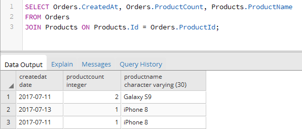
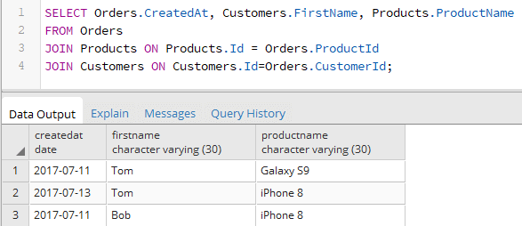

Вернуться на главную страницу →
Вернуться на главную страницу →
INNER JOIN
Еще одним способом соединения таблиц является использование оператора JOIN или INNER JOIN. Он представляет так называемое внутренее соединение. Его формальный синтаксис:
После оператора JOIN идет название второй таблицы, данные которой надо добавить в выборку. Перед JOIN можно указывать необязательный оператор INNER. Его наличие или отсутствие ни на что не влияет. Далее после ключевого слова ON указывается условие соединения. Это условие устанавливает, как две таблицы будут сравниваться. Как правило, для соединения применяется первичный ключ главной таблицы и внешний ключ зависимой таблицы.
Возьмем таблицы с данными из прошлой темы:
Используя JOIN, выберем все заказы и добавим к ним информацию о товарах:
Поскольку таблицы могут содержать столбцы с одинаковыми названиями, то при указании столбцов для выборки указывается их полное имя вместе с именем таблицы, например, "Orders.ProductCount".
С помощью псевдонимов, определяемых через оператор AS, можно сократить код:
Подобным образом мы можем присоединять и другие таблицы. Например, добавим к заказу информацию о покупателе из таблицы Customers:
Благодаря соединению таблиц мы можем использовать их столбцы для фильтрации выборки или ее сортировки:
Условия после ключевого слова ON могут быть более сложными по составу. Например, выбирем все заказы на товары, производителем которых является Apple.